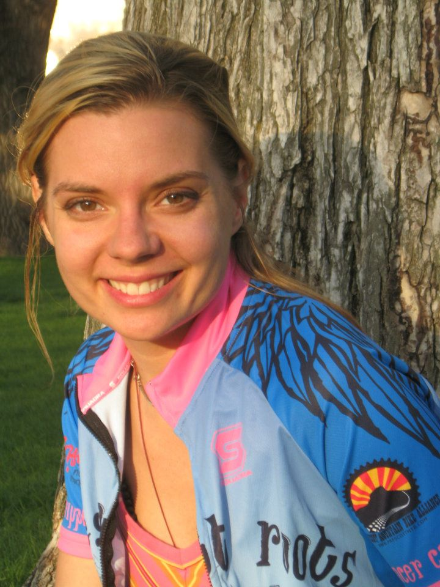

Amanda - who grew the in MidWest and thrives out West- comes farming and entrepreneurial roots. As a teenager, she fell in love with goats, particularly harness and pack goats. In Arizona, Amanda has a working dairy herd along with working wethers. The intersection of modern technology and communication with old farmers' tales is an area of fascination. Building programs that meet the needs of the small farmer to larger family farms providing efficifency and ease in data collection is a passion.Along with the ag sector, Amanda has twenty years in the food service industry. She has cultivated and perfected customer care skills where clients feel supported and cared for, while not giving away the whole hog.
Classical music is her life's blood. She began cello lessons at 9yo, and continues to perform as opportunities arise. Amanda lives in Arizona and enjoys exploring the vast landscape.